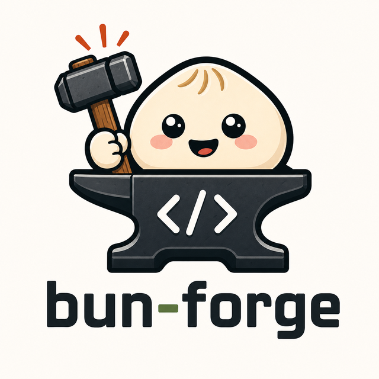
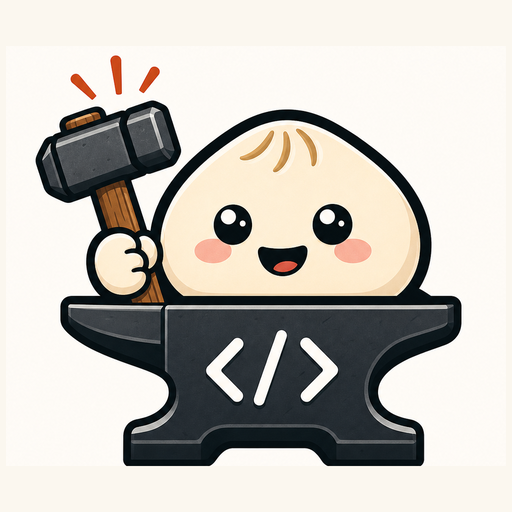
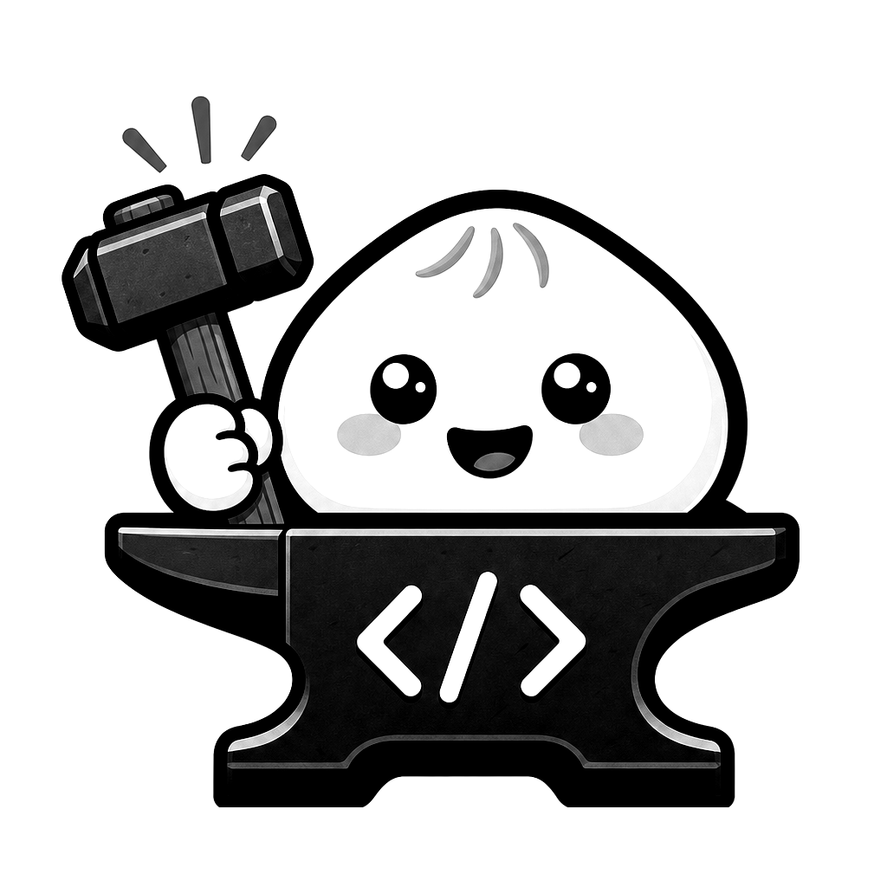
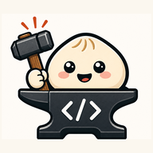
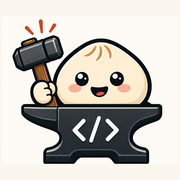

Full lockup
Use in README, npm, website hero, launch posts. Keep text.
The current generated image works as the master and README logo. Small surfaces need simplified declinations, not a blind resize of the full lockup.

Use in README, npm, website hero, launch posts. Keep text.

Use for avatars, app icons, docs cards. No wordmark.

Useful for badges and to verify silhouette strength.

mark 192
apple 180 favicon 64 favicon 48 favicon 32 favicon 16The full mascot is fine from 180 px upward. For 16-64 px, the favicon uses a dedicated micro-mark. The wordmark must never be used at favicon size.
Use favicon.ico plus 16/32 PNG exports.
Use the icon mark. Text would be unreadable in circular crops.
Use the full lockup, centered, around 280-420 CSS px wide.
The social card should be composed separately. Do not reuse a square logo as-is for a 2:1 preview.
| Use | Asset | Rule |
|---|---|---|
| Master | bun-forge-logo-master.png |
Keep as source. Do not overwrite. |
| README / npm | bun-forge-logo-full-640.png |
Full lockup with wordmark. |
| Avatar / app icon | bun-forge-mark-512.png |
Icon only, no text. |
| Apple touch | bun-forge-apple-touch-180.png |
Use icon mark at 180×180. |
| Favicon | favicon.ico, bun-forge-favicon-32.png |
Use the simplified micro-mark, not a logo crop. |
| Social preview | bun-forge-social-preview-1280x640.png |
Needs a composed 2:1 variant before publication. |
Keep the current image as the public full logo. Use crops/downscales for medium assets. Use the dedicated tiny icon for 16-64 px because the illustrated logo loses too much information at favicon size.